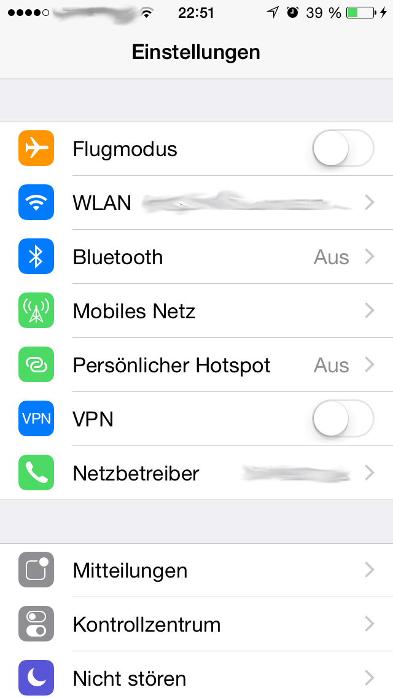
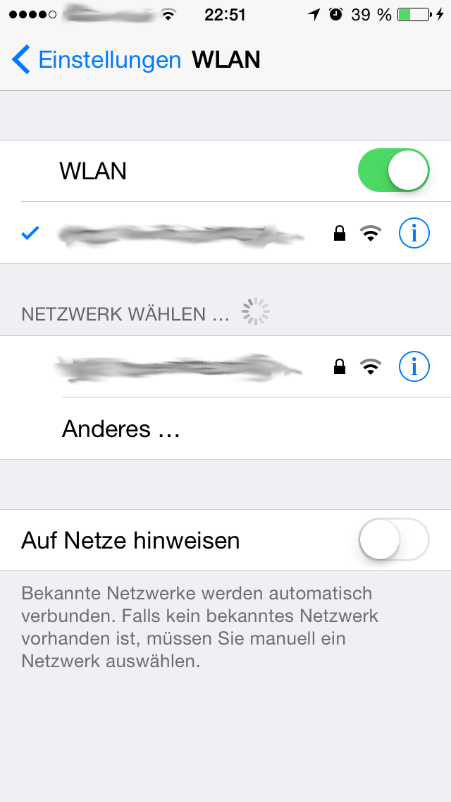
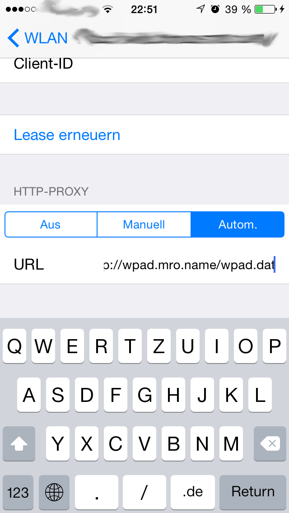

Block e.g. ads by sending requests to blacklisted hosts to a proxy that drops every request. All other requests go un-proxied directly to the desired host.
Powered by https://github.com/mro/ablopac
Has to be set anew for each WIFI network you join the 1st time:
  
Settings -> General -> VPN -> (VPN #1) -> Proxy